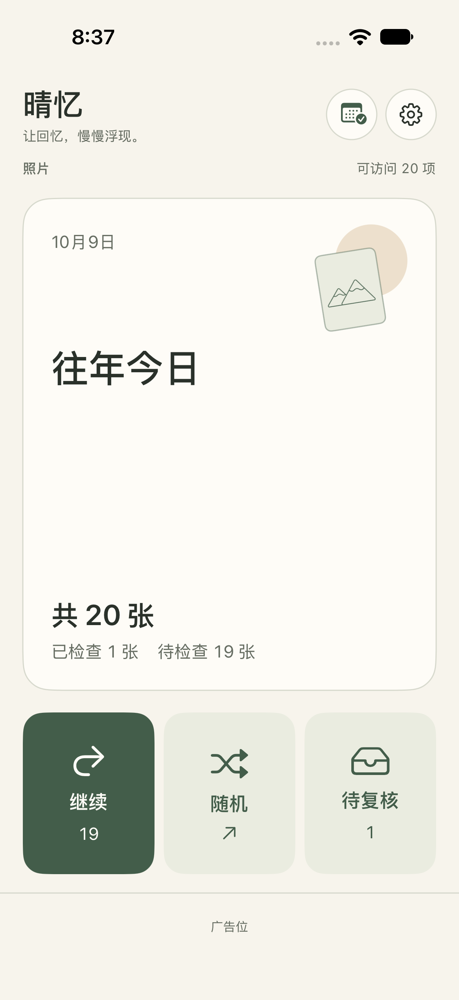

重逢往年今日
从熟悉的日期开始，看看那些差点被遗忘的小事。也可以随机回顾，换一种方式发现回忆。
为 iPhone 而作 · iOS 17 及以上
为 iPhone 设计的轻盈照片整理工具。回顾往年今日，按自己的节奏整理，在删除前再次确认。
无需帐号 · 照片在本机整理 · 包含广告

整理，也可以很轻松
从熟悉的日期开始，看看那些差点被遗忘的小事。也可以随机回顾，换一种方式发现回忆。
全屏上下滑动浏览，随手保留、加入待复核或整理到相册。需要时可以放大查看细节。
为「今日」和「随机」分别设置每组 1–500 项。随时暂停，当前组的进度会留下来。
放进「待复核」不会立刻删除。你可以再看一遍、恢复保留，然后主动确认删除。Apple 照片库的删除确认仍由系统处理。